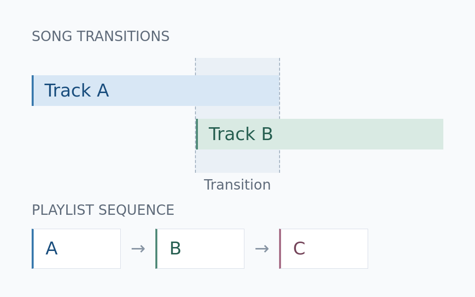

Automatic Song Transitions and Playlist Reranking
Planning song-to-song transitions from rhythm, key, and vocal cues, and arranging tracks for smoother continuous listening.

Song transitions
Music analysis informs where two songs meet, how long the transition lasts, and how tempo and effects are applied.
Playlist reranking
Track selection and ordering consider how well neighboring songs connect. This complements transition planning: choosing the next song and deciding how to reach it are two related parts of continuous listening.
Listening and editing
A listening and editing workbench supports comparing transition plans, adjusting settings, and exporting configurations. Playback comparisons help guide iteration on the listening experience.